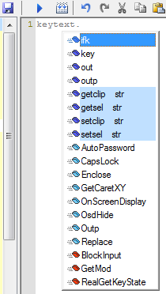
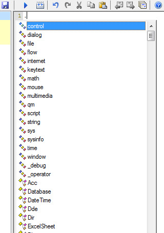

icon.
icon.Related functions are placed into categories. You can use syntax category.function to access them, and see a list of functions when you type dot (.) after category name.

To view list of categories, type
dot somewhere in macro text. Categories are at the top of the list, with icon.

A category is a user-defined type declared using special syntax. In declaration, instead of (or in addition to) normal member variables, you can add any global identifiers (names of functions, classes, etc) as members. Such identifiers aren't true members, but you can use category.identifier syntax to access them, and see them in function list. In declaration, names of global identifiers follow optional data members and colon. The colon must be separated by spaces. Instead of keyword type use keyword category. It just changes icon and placement in the popup list of global identifiers. Example:
define category files: category files : run del mkdir SetCurDir GetCurDir use functions from files category: files.run "abc.exe" ;;same as run "abc.exe" out files.GetCurDir ;;same as out GetCurDir
Syntax category.identifier is equivalent to simply identifier. The identifiers aren't strictly attached. Any identifier may follow category name and dot, and it will not be error. Category declaration can even include non-existing identifiers.
Category declaration can include other categories. One category can be derived from another category.
Category declaration can include dlls. Will be added all declared functions from them. Dll names must be enclosed in quotes. Example:
category mydll : "dll1" "dll2"
Category declaration can include QM folders. Will be added all functions and classes from them, except from private subfolders. Folder name or \path must be preceded by > and enclosed in quotes. Example:
category internet : ">\System\Functions\Internet" ">\User\Functions\Internet" IeWait Ftp Http
Default categories are declared in \System\Declarations\Categories. They include folders from \System\Functions and \User\Functions folders. If you want to add your functions to the default categories, do the following: Open System\Declarations\Categories function, see what folders are defined for user functions, create such folders, and move your functions there. For example, to add a function to the default internet category, create folder User, folder Functions in it, folder Internet in it, and move the function there.
QM 2.3.2. Category declaration can include class members. Class name and list of its members must be preceded by ? and enclosed in quotes. If only class name given, adds all its functions. Also can add other strings, for example operators. Examples:
category test : "?str getclip getsel setclip setsel" "?MyClass" Func1 Func2 "?(operator) + - * / and or"
See also: declarations scope